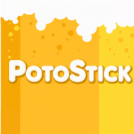
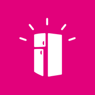
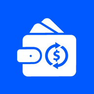
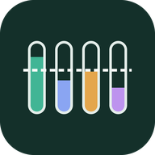

-

JeuPotoStick
Parie avec tes potes, sans un centime. La taverne compte les points.
Jouer -

CuisineMon Frigo
Dis ce que tu as, il te dit quoi cuisiner. Plus de 1 000 recettes, zéro gaspi.
Essayer -

ArgentMon Budget
Sache en un coup d’œil ce qu’il te reste à dépenser jusqu’à la prochaine paie.
Essayer -

BourseMa stratégie
Ton plan PEA mois après mois : quoi acheter, quand, et pourquoi.
Essayer
Comment l’ajouter à ton écran d’accueil
Ouvre l’appli, puis :
Android
Dans Chrome, menu ⋮ puis Installer l’application.
iPhone
Dans Safari, touche ⋯ à droite de l’adresse (ou le bouton Partager), puis Partager et Sur l’écran d’accueil. Laisse « Ouvrir comme app web » activé et touche Ajouter.